Check component outlines printed on the board to see on which side the component bodies should end
up.
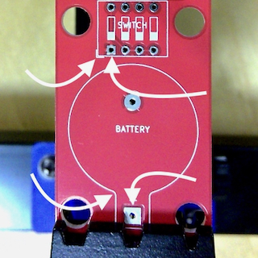
Orientation
Some components can go into the board multiple ways, but only one is correct; look for board
markings and solder pad shapes.
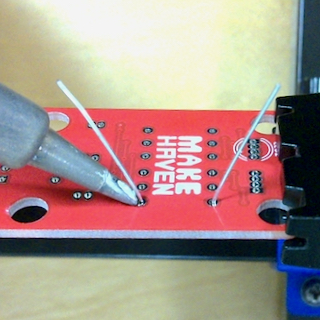
Solder in one lead
Always start by soldering in just one lead.
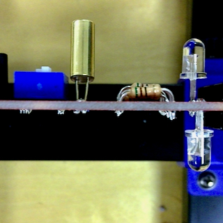
Height
Check component height before continuing; some components should not be flush against the board.
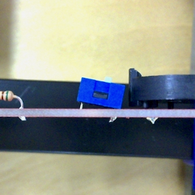
Skew
Check if the component is angled away from the board before continuing.
Solder in remaining leads
Finally, solder in the rest of the leads, and trim off excess if the leads are long.
Soldering
Keep your soldering tip clean
Swipe it back and forth on the brass tip cleaner; use one hand to hold down the cleaner.
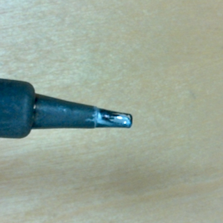
Coat the soldering tip
Coat the soldering tip with a small amount of solder.
Heat the pad and the lead
Place the tip of the soldering iron where the soldering pad and the component lead meet.
Add solder
Hold the solder wire between your fingers, about an inch from the end; touch it to the soldering
iron and let it flow onto the pad. You don't need much — and it’s easier to add than to remove.
Move the solder away
Move the solder wire away from the soldering iron.
Move the iron away
Move the soldering iron away from the solder joint.
Resistors
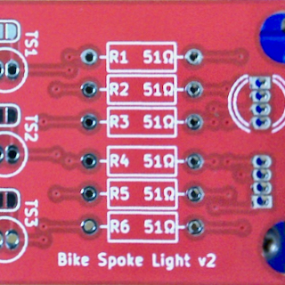
Location
There are six resistors, all identical.
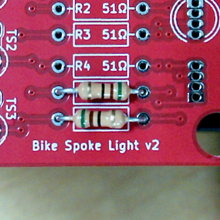
Orientation
Orientation doesn’t matter.
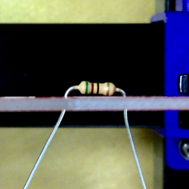
Prep
Bend leads slightly to keep the resistor from falling out.
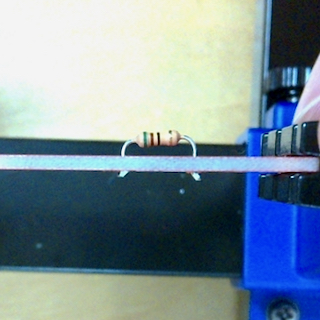
Height
Make it flush or almost flush with the board.
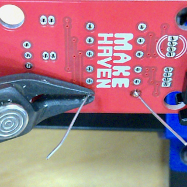
Finishing up
Clip off excess leads.
Battery holder
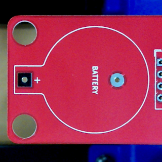
Location
There is one battery holder.
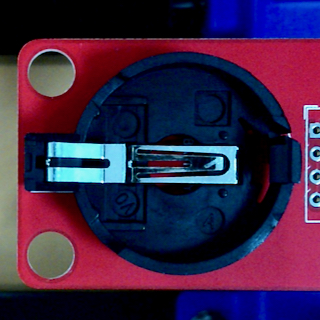
Orientation
Orientation matters.
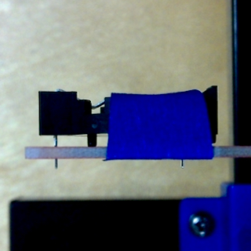
Prep
Tape it until you solder in the first pin.
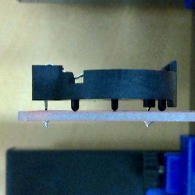
Height
Make it flush with the board.
Switches
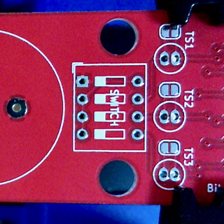
Location
There is one component; it contains four switches.
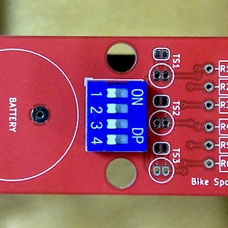
Orientation
Orientation doesn’t really matter, but these instructions assume the “on” side is closer
to the resistors.
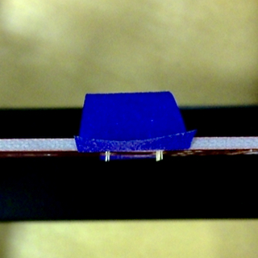
Prep
Tape it until you solder in the first pin.
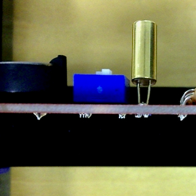
Height
Make it flush with the board.
LEDs
Location
There are two LEDs, one on each side of the board.
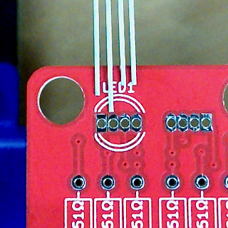
Orientation
Orientation matters; the long lead of the LED is on the same side as the rectangular solder pad..
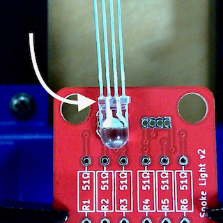
Orientation
The flat spot on the LED body is also on the same side..
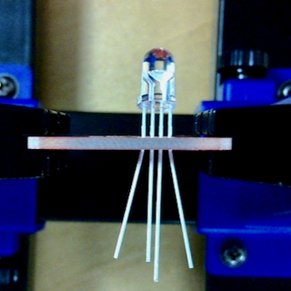
Prep
Bend the outside leads slightly to keep the LED from falling out.
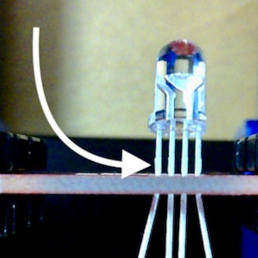
Height
The flat spot on the leads should be just above the board.
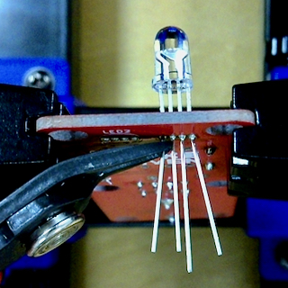
Finishing up
Clip off excess leads.
Fixing soldering mistakes
Reflow
If you end up with an unwanted connection between adjacent leads, sometimes it's enough to just
simultaneously melt both and let the solder reflow.
Removing excess
If you end up with too much solder, you can remove it with copper braid, which wicks up solder.
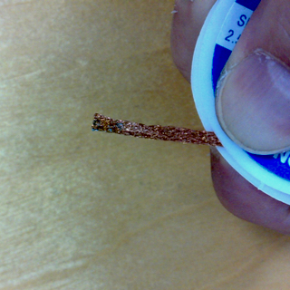
Copper braid
Make sure you hold copper braid by the plastic container, not by the metal.
Solder jumpers
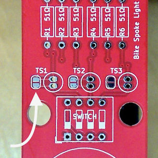
Location
There are three solder jumpers.
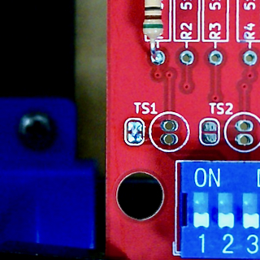
Soldering
Put a small blob of solder across the two pads of each jumper.
Testing
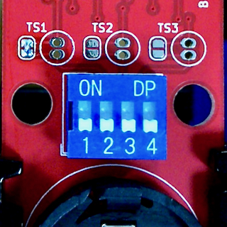
Turn everything off
Flip all four switches to off (towards the “1”-“4” labels and away from the “on” label).
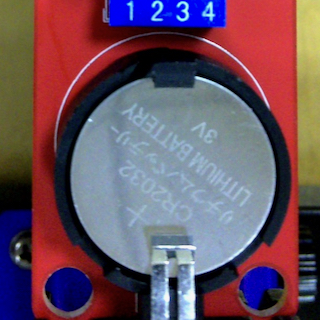
Insert a battery
Slide it under the metal clip, then push down.
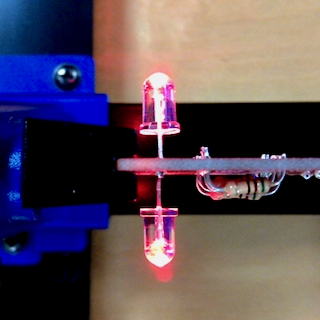
Test red
Flip switches to on-on-off-off; both LEDs should be red.
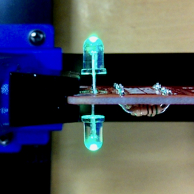
Test green
Flip switches to on-off-on-off; both LEDs should be green.
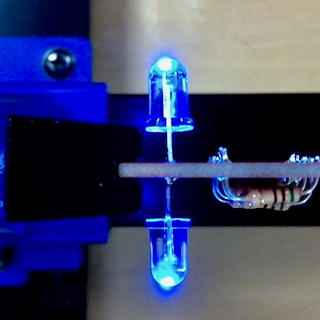
Test blue
Flip switches to on-off-off-on; both LEDs should be blue.
Pick a color pair
Your LEDs will show one color with the board right side up, and the other when you flip the board.
Blue / purple or
Green / yellow
Desolder the solder jumper #1 and solder in tilt switch #1.
Blue / teal or
Red / yellow
Desolder the solder jumper #2 and solder in tilt switch #2.
Green / teal or
Red / purple
Desolder the solder jumper #3 and solder in tilt switch #3.
Tilt switch
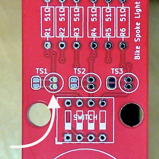
Location
There are three places for a tilt switch; you will solder in one (based on the color choice you
made before).
Desolder jumper
Desolder the jumper next to the tilt switch using copper braid.
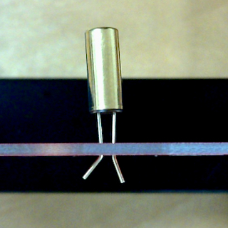
Orientation
Orientation doesn't matter.
Prep
Slightly bend the leads to keep it from falling out.
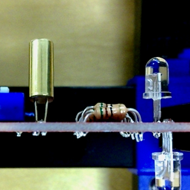
Height
Make it about the same distance from the board as the LEDs.